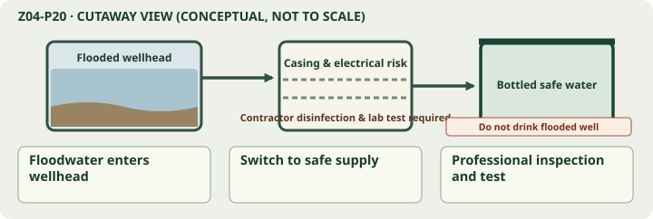

Z04-P20 · Water · New manuscript
Protect against contaminated private wells after flooding
Prevent waterborne illness and electrical hazards when a private well is submerged or affected by floodwater.
When it applies · Rural homes, cabins and camps supplied by private wells after local flooding or surface-water intrusion around the wellhead.
Equipment · Bottled or verified safe water, local health department contact and qualified well-contractor information.

Actions
- Stop drinking tap water from any private well whose casing, pit or pump area was submerged or surrounded by floodwater; use bottled water instead.[W18, W06]
- Watch for chemical, fuel or pesticide spills near the well; if chemical contamination is suspected, do not boil or use the water and call health authorities.[W18, W01]
- Stay clear of flooded electrical pump panels and arrange a qualified well contractor and certified water test before returning the well to drinking service.[W18, ED]
Failure recognition · Drinking clear tap water from a flooded well after surface water recedes, or attempting DIY shock chlorination around damaged wiring.[W18, W09]
Verify · Confirm household drinking, cooking and hygiene rely on verified safe water until certified lab tests clear the well.[W18, W29, ED]
Stop or change course · Do not resume drinking from a flood-impacted private well until professional inspection, disinfection if appropriate and laboratory testing confirm safety.[W18]
Evidence and editorial notes
- W01 · CDC · How to Make Water Safe in an Emergency (2024-09-19)
- Section: Water with fuel or toxic chemicals in it · Conditions: Suspected fuel, toxic chemicals or radioactive contamination
Support: Use a different safe supply. Standard boiling and microbial disinfection do not make this water safe.
Limitations: Does not list contaminant-specific lab remediation; applies to emergency consumer decisions only. · Conflicting evidence: None across CDC/EPA emergency guidance.
Editorial note: Used as upstream hard-stop gate prior to any field treatment card. · Specialist reviewer: Drinking-water safety and public health
Primary source · checked 2026-11-24 - W06 · CDC · How to Create an Emergency Water Supply (current web edition)
- Section: How to store emergency water; Safe storage containers · Conditions: Potable water intended for emergency storage
Support: Prefer sealed commercial water or clean food-grade tight-closing containers. Avoid containers that held toxic chemicals.
Limitations: Container shelf durability and rotation depend on plastic/material type and storage heat. · Conflicting evidence: None; reinforces strict raw-vs-clean segregation.
Editorial note: Used to enforce labeling and dedicated raw/potable vessel separation. · Specialist reviewer: Drinking-water safety and public health
Primary source · checked 2026-11-24 - W09 · CDC · Water Treatment Options When Hiking, Camping, or Traveling (current web edition)
- Section: Overview and water treatment methods · Conditions: Hiking or camping where no safe source is confirmed
Support: Even clear water can contain germs. Assess the supply and carry safe water or an appropriate treatment method.
Limitations: Visual clarity never detects microbes or dissolved chemical contaminants. · Conflicting evidence: None across CDC/NPS/EPA sources.
Editorial note: Reinforces clarity-is-not-potability invariant across all Z04 cards. · Specialist reviewer: Drinking-water safety and public health
Primary source · checked 2026-11-24 - W18 · CDC · What to Do With Your Private Well After a Flood (current web edition)
- Section: How to Disinfect Wells After an Emergency > Safety precautions and before returning to use · Conditions: Private drinking water wells submerged or impacted by floodwater
Support: Do not drink flood-impacted well water; rely on bottled or verified safe water, watch for fuel/chemical spills, and use qualified well contractors for inspection, electrical safety, and disinfection.
Limitations: Well shock-chlorination is unsafe to improvise around damaged electrical equipment or chemical releases. · Conflicting evidence: None; aligns with EPA private-well guidance.
Editorial note: Prevents DIY well repair or consumption before testing confirms safety. · Specialist reviewer: Drinking-water utility and environmental health
Primary source · checked 2026-11-24 - W29 · CDC · How to Make Water Safe in an Emergency (2024-09-19)
- Section: Boil > Safe Water for Infants, Wounds, and Hygiene · Conditions: Emergency hygiene, wound rinsing, and infant formula preparation under water advisories
Support: Use confirmed potable or properly boiled-and-cooled water for brushing teeth, washing produce, cleaning wounds, and mixing infant formula; avoid untreated water for food-contact utensils.
Limitations: Do-not-use advisories may also prohibit skin contact or bathing depending on contaminant. · Conflicting evidence: None; extends drinking safety to hygiene and preparation boundaries.
Editorial note: Separates potable-required tasks from non-potable utility uses. · Specialist reviewer: Public health and wilderness medicine
Primary source · checked 2026-11-24
Source lineage · CDC private-well flood guidance; new manuscript · Classification · New manuscript.